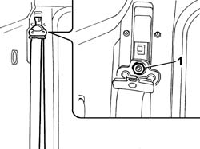
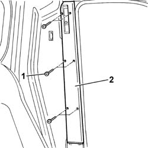

7040H34 CENTRAL PILLAR TRIM - R R
- Path
- Procedures > 70 FITTINGS > 7040 BODY INTERIOR FITTINGS AND TRIM > 7040H ROOF PANEL LINING > 7040H34 CENTRAL PILLAR TRIM - R R
- Kind
- repair procedure (removal / refitting; the operation number is the code)
- Applies to
- all engines; all production periods
- Interactive page
- https://sloeber94.github.io/elrnDB-fDct/en/#/244001523
Applies to: all engines; all production periods
 Removing
Removing
 Refitting
RefittingOp. 7040H36 CENTRAL TRIM LOWER ELEMENT - R R
- Release the seat belt height adjuster knob.
- Remove the seat belt idler fixing nut cover.
1. Undo the seat belt idler fixing nut.

Applies to: all engines; all production periods
1. Undo the bolts fixing the trim.
2. Remove the centre pillar trim.

Applies to: all engines; all production periods
Refitting
Removing- Place the trim in the correct fitting position.
- Fit the trim on the centre pillar tightening the fixing bolts.
- Fasten the seat belt idler seal tightening the nut to the recommended torque.
 | Value - daNm | Fastening | Component | Ø |
|---|---|---|---|---|
. | 4 | Nut | FRONT SEAT BELT IDLER | - |
- Fit the seat belt idler fixing nut cover.
- Fit the knob on the adjuster.